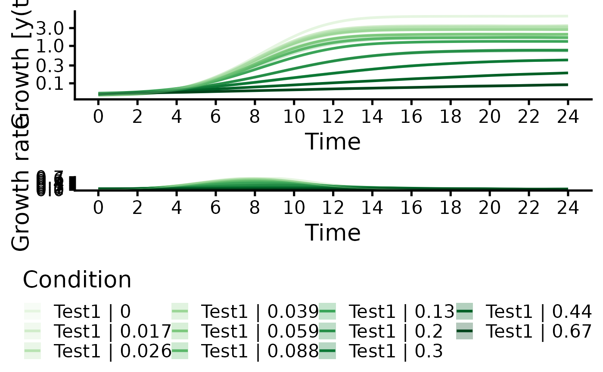

Generic plot function for grofit objects. Combine different groups of samples into a single plot
Source: R/growth_plots.R
plot.grofit.Rdplot.grofit extracts the spline fits of a subset of samples in a grofit object calculates averages and standard deviations of conditions with replicates and combines them into a single plot.
Usage
# S3 method for grofit
plot(
x,
...,
data.type = c("spline", "raw"),
IDs = NULL,
names = NULL,
conc = NULL,
exclude.nm = NULL,
exclude.conc = NULL,
mean = TRUE,
log.y = TRUE,
deriv = TRUE,
n.ybreaks = 6,
colors = NULL,
color_groups = TRUE,
group_pals = c("Green", "Orange", "Purple", "Magenta", "Grey", "Blue", "Grey", "Red",
"Cyan", "Brown", "Mint"),
basesize = 20,
y.lim = NULL,
x.lim = NULL,
y.title = NULL,
x.title = NULL,
y.lim.deriv = NULL,
y.title.deriv = NULL,
lwd = 1.1,
legend.position = "bottom",
legend.ncol = 2,
plot = TRUE,
export = FALSE,
height = NULL,
width = NULL,
out.dir = NULL,
out.nm = NULL
)Arguments
- x
A
grofitobject created withgrowth.workflowcontaining spline fits.- ...
(optional) Additional
grofitobjects created in separate workflows for joint plotting in a single graph.- data.type
(Character) Plot either raw data (
data.type = "raw") or the spline fit results- IDs
(String or vector of strings) Define samples or groups (if
mean = TRUE) to combine into a single plot based on exact matches with entries in thelabelorconditioncolumns ofgrofit$expdesign.- names
(String or vector of strings) Define groups to combine into a single plot. Partial matches with sample/group names are accepted. If
NULL, all samples are considered. Note: Ensure to use unique substrings to extract groups of interest. If the name of one condition is included in its entirety within the name of other conditions, it cannot be extracted individually.- conc
(Numeric or numeric vector) Define concentrations to combine into a single plot. If
NULL, all concentrations are considered. Note: Ensure to use unique concentration values to extract groups of interest. If the concentration value of one condition is included in its entirety within the name of other conditions (e.g., the dataset contains '1', '10', and '100',code = 10will select both '10 and '100'), it cannot be extracted individually.- exclude.nm
(String or vector of strings) Define groups to exclude from the plot. Partial matches with sample/group names are accepted.
- exclude.conc
(Numeric or numeric vector) Define concentrations to exclude from the plot.
- mean
(Logical) Display the mean and standard deviation of groups with replicates (
TRUE) or plot each sample individually (FALSE)?- log.y
(Logical) Log-transform the y-axis of the plot (
TRUE) or not (FALSE)?- deriv
(Logical) Show derivatives over time in a separate panel below the plot (
TRUE) or not (FALSE)?- n.ybreaks
(Numeric) Number of breaks on the y-axis. The breaks are generated using
scales::pretty_breaks. Thus, the final number of breaks can deviate from the user input.- colors
(vector of strings) Define a color palette used to draw the plots. If
NULL, default palettes are chosen based on the number of groups/samples within the plot. Note: The number of provided colors should at least match the number of groups/samples.- color_groups
(Logical) Shall samples within the same group but with different concentrations be shown in different shades of the same color?
- group_pals
(String vector) Define the colors used to display sample groups with identical concentrations. The number of selected color palettes must be at least the number of displayed groups. The order of the chosen palettes corresponds to the oder of conditions in the legend. Available options: "Green", "Oranges", "Purple", "Cyan", "Grey", "Red", "Blue", and "Magenta".
- basesize
(Numeric) Base font size.
- y.lim
(Numeric vector with two elements) Optional: Provide the lower (
l) and upper (u) bounds of the y-axis of the growth curve plot as a vector in the formc(l, u). If only the lower or upper bound should be fixed, providec(l, NA)orc(NA, u), respectively.- x.lim
(Numeric vector with two elements) Optional: Provide the lower (
l) and upper (u) bounds of the x-axis of both growth curve and derivative plots as a vector in the formc(l, u). If only the lower or upper bound should be fixed, providec(l, NA)orc(NA, u), respectively.- y.title
(Character) Optional: Provide a title for the y-axis of the growth curve plot.
- x.title
(Character) Optional: Provide a title for the x-axis of both growth curve and derivative plots.
- y.lim.deriv
(Numeric vector with two elements) Optional: Provide the lower (
l) and upper (u) bounds on the y-axis of the derivative plot as a vector in the formc(l, u). If only the lower or upper bound should be fixed, providec(l, NA)orc(NA, u), respectively.- y.title.deriv
(Character) Optional: Provide a title for the y-axis of the derivative plot.
- lwd
(Numeric) Line width of the individual plots.
- legend.position
(Character) Position of the legend. One of "bottom", "top", "left", "right".
- legend.ncol
(Numeric) Number of columns in the legend.
- plot
(Logical) Show the generated plot in the
Plotspane (TRUE) or not (FALSE). IfFALSE, a ggplot object is returned.- export
(Logical) Export the generated plot as PDF and PNG files (
TRUE) or not (FALSE).- height
(Numeric) Height of the exported image in inches.
- width
(Numeric) Width of the exported image in inches.
- out.dir
(Character) Name or path to a folder in which the exported files are stored. If
NULL, a "Plots" folder is created in the current working directory to store the files in.- out.nm
(Character) The name of the PDF and PNG files if
export = TRUE. IfNULL, a name will be automatically generated including the chosen parameter.
Value
A plot with all growth curves (raw measurements or nonparametric fits) in a dataset, with replicates combined by the group averages (if mean = TRUE) or not (mean = FALSE).
Examples
# Create random growth data set
rnd.data1 <- rdm.data(d = 35, mu = 0.8, A = 5, label = "Test1")
rnd.data2 <- rdm.data(d = 35, mu = 0.6, A = 4.5, label = "Test2")
rnd.data <- list()
rnd.data[["time"]] <- rbind(rnd.data1$time, rnd.data2$time)
rnd.data[["data"]] <- rbind(rnd.data1$data, rnd.data2$data)
# Run growth curve analysis workflow
res <- growth.workflow(time = rnd.data$time,
data = rnd.data$data,
fit.opt = "s",
ec50 = FALSE,
export.res = FALSE,
suppress.messages = TRUE,
parallelize = FALSE)
plot(res, names = "Test1", legend.ncol = 4) # Show only samples for condition "Test1"
